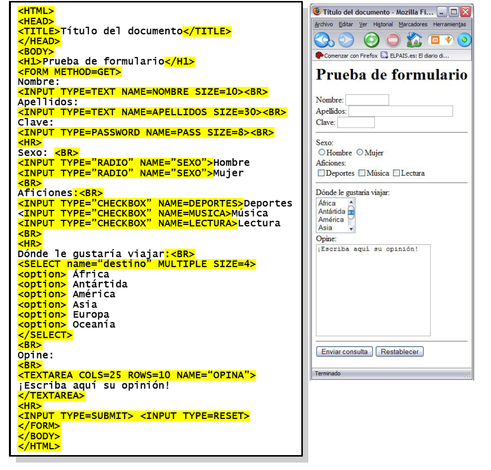
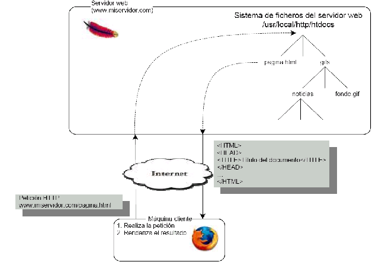
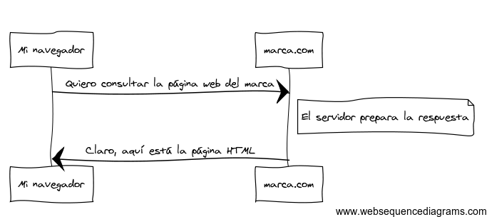
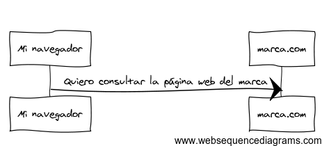
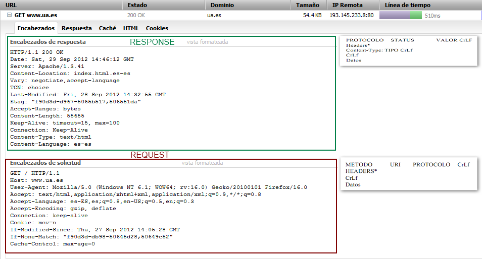
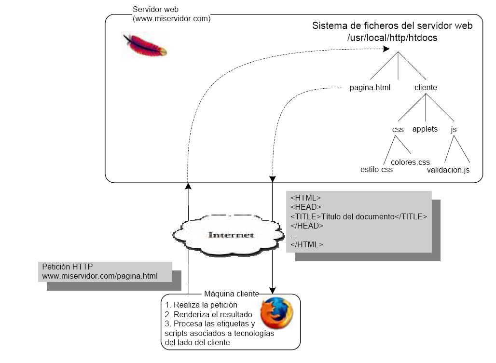
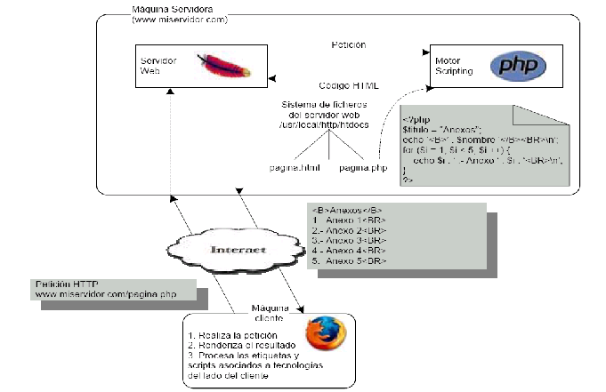
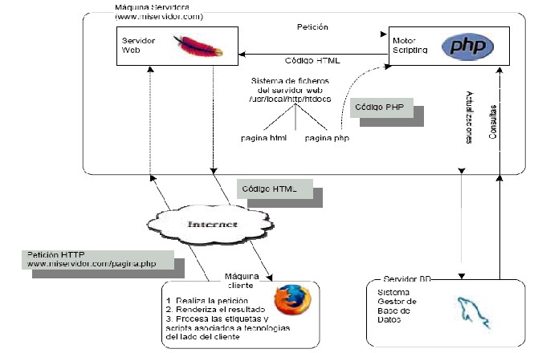
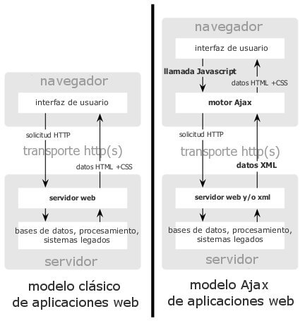
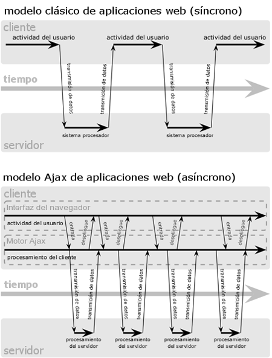

Arquitectura de aplicaciones web
Para entender cómo funciona PHP, deberemos hacer un repaso a las diferentes arquitecturas de aplicaciones web existentes. Para ello vamos a englobarlas en 5 tipos:
- HTML estático
- Tecnologías de cliente
- Tecnologías de servidor
- Aplicaciones web
- Aplicaciones web AJAX
- Aplicaciones de una sola página
HTML estático
El primer tipo de aplicaciones web a tener en cuenta son las basadas en HTML estático. En este tipo de aplicaciones, toda la página está codificada por medio de los lenguajes HTML y CSS, sin incluirse ningún código que realice procesamiento adicional ni en el lado del cliente ni en el lado del servidor. Queda reflejado en la siguiente figura:

El proceso desde que el usuario introduce una URL en la barra de navegación del navegador hasta que éste finalmente visualiza la página se resume en la figura:

El servidor ha sido configurado para servir todos los archivos que se encuentren bajo el directorio /usr/local/http/htdocs. Dentro de dicho directorio se encuentra el fichero pagina.html solicitado por el navegador, el cual es enviado. Se trata de código HTML, que es interpretado por el navegador y mostrado al usuario, sin ningún tipo de procesamiento adicional por parte del servidor o del navegador.
Más adelante veremos cómo funciona el protocolo HTTP junto con el lenguaje PHP.
Funcionamiento del protocolo HTTP
Ya hemos hablado de la arquitectura clásica del desarrollo web pero necesitamos entender el concepto fundamental común para entenderlo: el protocolo HTTP. HTTP ("HyperText Transfer Protocol" - Protocolo de transferencia hipertexto) es un "lenguaje de texto" que permite a dos máquinas comunicarse entre sí. La comunicación entre cliente (navegador) y servidor se lleva a cabo por medio del dicho protocolo HTTP en dos pasos:
- Paso 1: El navegador envía una petición a un servidor
- Paso 2: El servidor devuelve una respuesta
Podríamos resumir la comunicación entre un cliente y servidor a través de la siguiente figura:

Y aunque el lenguaje real utilizado es un poco más formal, sigue siendo bastante simple. HTTP es el término utilizado para describir este lenguaje simple basado en texto. Y no importa cómo desarrollemos en la web, el objetivo del servidor siempre es entender las peticiones de texto simple, y devolver respuestas en texto simple.
Paso 1: El cliente envía una petición
Todas las conversaciones en la web comienzan con una petición (REQUEST). La petición es un mensaje de texto creado por un cliente (por ejemplo un navegador, una aplicación para el iPhone, etc.) en un formato especial conocido como HTTP. Echemos un vistazo a la primera parte de la interacción (la petición) entre _mi navegador_ y el servidor web de _marca.com_:

Hablando en HTTP, esta petición se vería más o menos así:
GET / HTTP/1.1
Host: marca.com
Accept: text/html
User-Agent: Mozilla/14.0 (Macintosh)
Este sencillo mensaje comunica todo lo necesario sobre qué recursos exactamente solicita el cliente. El formato de la petición (REQUEST) es el siguiente:
METODO URI PROTOCOLO CrLf HEADERS*
Content-Type: TIPO CrLf
Datos
...
La primera línea de una petición HTTP es la más importante y contiene dos cosas: el método HTTP y la URI. El método HTTP define lo que quieres hacer con el recurso (por ejemplo, GET o POST). La URI es la dirección o ubicación que identifica unívocamente al recurso que el cliente quiere (por ejemplo, index.html, /, /libros/novedades.html, etc.) El significado de los campos es el siguiente:
METODO hace referencia a cualquiera de los métodos de transmisión de datos: GET, POST, PUT, DELETE, etc.
URI (Uniform Resource Identifier) es el identificador del recurso solicitado, que tendrá el siguiente formato:
http://servidor[:puerto]/[ruta?query_string]
index.html, /, /libros/novedades.html, /contacto.php, etc. son ejemplos de URIs válidas.
El campo PROTOCOLO contendrá el valor HTTP/1.1, que es la versión del protocolo utilizada actualmente.
Con respecto a CrLf (Carriage return-Line Feed), representa un salto de línea (retorno de carro) más inicio de nueva línea.
HEADERS es un conjunto de campos opcionales que permiten proporcionar información adicional sobre la petición.
Content-Type indica el tipo de los datos que se envían junto a la solicitud, siguiendo la nomenclatura MIME, como por ejemplo text/plain (texto plano), text/html (código HTML) o imágenes (como image/gif en el caso de imágenes GIF).
Los datos están separados de la cabecera por una línea en blanco, y en la petición son opcionales. Esta parte de la petición está pensada por ejemplo para el envío de los datos de un formulario si se hace uso del método POST.
Podríamos decir que los métodos HTTP que son los _verbos_ de la petición y definen las formas más comunes en que podemos actuar sobre un recurso:
| Métodos HTTP más usados | |
|---|---|
| GET | Recupera el recurso desde el servidor |
| POST | Crea un recurso en el servidor |
| PUT | Actualiza el recurso en el servidor |
| DELETE | Elimina el recurso del servidor |
Hay nueve métodos HTTP definidos por la especificación del protocolo HTTP, pero muchos de ellos no se utilizan o no se apoyan ampliamente.
Además de la primera línea, una petición HTTP invariablemente contiene otras líneas de información conocidas como cabeceras de petición. Las cabeceras pueden suministrar una amplia gama de información como el Host solicitado, los formatos de respuesta que acepta el cliente (Accept) y la aplicación que utiliza dicho cliente para realizar la petición (User-Agent). Existen muchas otras cabeceras y se pueden encontrar en el artículo Lista de campos de las cabeceras HTTP en la Wikipedia.
Antes de hablar del paso 2 en el que se explica cómo se devuelve la respuesta al servidor, debemos hablar de otro método que vamos a usar mucho en desarrollo web como es el método POST. POST es un método que crea un paquete REQUEST (o recurso) utilizado por el usuario cuando necesita enviar datos al servidor como parte de la petición no como parte de la URL, por ejemplo cuando se tiene que enviar un fichero o enviar un formulario de registro con información que no debe ser visualizada por la URL (por ejemplo login y password en un formulario de registro de usuario). Al contrario que el método GET, donde se envía la dirección URL y las cabeceras al servidor, POST incluye un mensaje junto a las cabeceras. Esto nos permite enviar datos de cualquier tipo y de longitud arbitraria al servidor.
POST /login.php HTTP/1.1
Host: localhost
Connection: keep-alive
Content-Length: 27
Cache-Control: max-age=0
Origin: http://localhost
User-Agent: Mozilla/5.0 (Windows NT 6.1; WOW64)
Content-Type: application/x-www-form-urlencoded
Accept: text/html,application/xhtml+xml,application/xml;q=0.9,*/*;q=0.8
Referer: http://localhost/sesion01/form.php
Accept-Encoding: gzip,deflate,sdch
Accept-Language: es-ES,es;q=0.8
Accept-Charset: ISO-8859-1,utf-8;q=0.7,*;q=0.3
login=pepe&password=reina
Paso 2: El servidor devuelve una respuesta
Una vez que un servidor ha recibido la petición, sabe exactamente qué recursos necesita el cliente (a través de la URI) y lo que el cliente quiere hacer con ese recurso (a través del método). Por ejemplo, en el caso de una petición GET, el servidor prepara el recurso y lo devuelve en una respuesta HTTP. Considera la respuesta del servidor web, marca.com:
Traducida a HTTP, la respuesta enviada de vuelta al navegador se verá algo similar a esto:
HTTP/1.1 200 OK
Date: Sat, 02 Apr 2011 21:05:05 GMT
Server: lighttpd/1.4.19
Content-Type: text/html
<html>
<!-- Web del MARCA -->
</html>
El formato de la respuesta (RESPONSE) es el siguiente:
PROTOCOLO ESTADO CADENA_ESTADO CrLf
HEADERS*
Content-Type: TIPO CrLf
Datos
...
Veamos el significado de cada campo:
El campo PROTOCOLO, al igual que en el caso de la petición, contendrá la versión del protocolo HTTP utilizado.
ESTADO será un código numérico que indicará cual ha sido el resultado de la interacción entre el cliente y el servidor.
CADENA_ESTADO será una traducción del código numérico del estado a una cadena de texto, de tal forma que pueda ser más fácilmente entendible por parte de un humano.
HEADERS* es un conjunto de cabeceras opcionales que proporcionan al navegador más información sobre la respuesta del servidor.
Content-type tiene la misma función que en el caso de la petición.
Los Datos consistirán en el código HTML de la página a visualizar, o el contenido de una imagen si fue éste el tipo de recurso que se solicitó al servidor. El navegador interpreta los datos enviados por el servidor para mostrarle la información al usuario.
La respuesta HTTP contiene el recurso solicitado (contenido HTML en este caso), así como otra información acerca de la respuesta. La primera línea es especialmente importante y contiene el código de estado HTTP (200 en este caso) de la respuesta. El código de estado comunica el resultado global de la petición devuelto al cliente. ¿Tuvo éxito la petición? ¿Hubo algún error? Existen diferentes códigos de estado que indican éxito, un error o qué más se necesita hacer con el cliente (por ejemplo, redirigirlo a otra página). La lista completa se puede encontrar en el artículo Lista de códigos de estado HTTP en la Wikipedia.
¿Te suena el 404 not found? Es el código de estado más famoso de todo el protocolo HTTP. Hay una entrada en la wikipedia dedicada a exclusivamente a este código de estado: Error 404
Al igual que la petición, una respuesta HTTP contiene datos adicionales conocidos como cabeceras HTTP. Por ejemplo, una importante cabecera de la respuesta HTTP es Content-Type. El cuerpo del mismo recurso se puede devolver en múltiples formatos, incluyendo HTML, XML o JSON por nombrar unos cuantos. La cabecera **Content-Type** indica al cliente en qué formato se está devolviendo. Existen muchas otras cabeceras, algunas de las cuales son muy útiles. Por ejemplo, ciertas cabeceras se pueden usar para crear un poderoso sistema de memoria caché.
A continuación usamos firebug para ver un ejemplo real de comunicación entre un navegador (browser) y el servidor (server) siguiendo el protocolo HTTP. En la parte inferior vemos la petición (o REQUEST) que realiza el navegador. En este caso, el usuario solicita la URL _www.ua.es_, lo que llevaría a la raiz del directorio público acceder a un documento HTML de nombre _index.html_. Se utiliza el protocolo HTTP/1.1, y se especifica que el método de envío de datos es GET. No se envían datos adicionales en el paquete. En la parte derecha de la primera fila se puede observar la respuesta del servidor. En primer lugar se indica el protocolo (que coincide con la versión especificada en la petición), y a continuación se puede ver el código de estado, tanto de forma numérica (200) como en forma de cadena (_OK_), lo cual quiere decir que la petición ha sido procesada con éxito y que se está respondiendo con el recurso solicitado. La respuesta contiene a continuación una serie de cabeceras con información adicional, como la fecha, la versión del servidor web, y el tipo de contenido que se está enviando, que en este caso se trata de un documento HTML (_Content-type: text/html_). Por último se envían los datos en sí mismos: el contenido del documento HTML que solicitó el navegador, el cual será interpretado y mostrado al usuario.

Peticiones, respuestas y desarrollo Web
Esta conversación petición-respuesta es el proceso fundamental que impulsa toda la comunicación en la web. Y tan importante y poderoso como es este proceso, inevitablemente es simple.
El hecho más importante es el siguiente: independientemente del lenguaje que utilicemos, el tipo de aplicación que construyamos (web, móvil, API JSON), o la filosofía de desarrollo que sigamos, el objetivo final de una aplicación siempre es entender cada petición y crear y devolver la respuesta adecuada. PHP está diseñado para adaptarse a esta realidad.
Para más información acerca de la especificación HTTP, se recomienda leer la referencia original HTTP 1.1 RFC o HTTP Bis, el cual es un esfuerzo activo para aclarar la especificación original. Una gran herramienta para comprobar tanto la petición como las cabeceras de la respuesta mientras navegamos es la extensión (Live HTTP Headers) de Firefox.
Más adelante veremos qué herramientas nos ofrece PHP para interactuar con el protocolo HTTP. En realidad, PHP nos abstrae bastante de todo el proceso.
Tecnologías de cliente
El siguiente tipo de aplicación web que vamos a tratar es aquella que está basada en _tecnologías de cliente_, es decir, aquellas aplicaciones web donde se añade interactividad al contenido HTML por medio de un lenguaje interpretado y procesado por el propio navegador, como puede ser CSS, HTML dinámico, JavaScript, Flash, etc. Mucho de este contenido dinámico tan solo podrá ser interpretado mediante el uso del módulo o plugin adecuado. En este tipo de aplicaciones el servidor no realiza ningún procesamiento y se limita a servir recursos, siguiendo el esquema de la figura siguiente:

Como se puede observar, es todo muy similar al funcionamiento mostrado en la figura donde hablábamos del HTML estático, con la única diferencia de que el navegador, además de recibir código HTML o imágenes, puede recibir código que debe procesar antes de poder mostrar la página al usuario e interaccionar con él.
Este tipo de tecnologías tienen la ventaja de que al realizarse la ejecución en el cliente, se produce una menor carga de trabajo en el servidor, siendo mucho más sencillo evitar que se sobrecargue en situaciones de tráfico intenso. Por otra parte, ofrecen un mayor dinamismo, ya que es posible interaccionar con la página web de una manera más inmediata, en la mayoría de los casos sin necesidad de esperar a que se realice una nueva conexión con el servidor. Además, son la base de lo que se denomina la Web 2.0.
Sin embargo, existen una serie de inconvenientes. Muchas veces el código en el lado del cliente es dependiente del navegador. Esto quiere decir que los navegadores creados por diferentes compañías pueden interpretar de manera distinta algunos componentes del lenguaje e incluso añadir sus propias extensiones que no sean entendidas por el resto. Por otra parte, no existe manera de evitar que el usuario active o desactive funcionalidades de su navegador (como por ejemplo el uso de JavaScript), lo que puede conllevar que éste visualice de forma incorrecta nuestras páginas. Por último, en algunos casos es necesario que el usuario disponga de un plugin para poder acceder al contenido, algo que no siempre es así.
Tecnologías de servidor
Un tercer tipo de arquitectura de aplicaciones web es el que se basa en _tecnologías de servidor_. En este tipo de arquitecturas se utiliza un lenguaje que se ejecuta en el lado del servidor, por ejemplo _PHP_, para realizar tareas de back-end, es decir, tareas que no requieren interacción de ningún tipo por parte del usuario: conexión a la base de datos, gestión de sesiones, personalización del sitio según las preferencias del usuario, etc. Además, se produce una comunicación en dos sentidos:
- Del cliente hacia el servidor: el servidor procesa la información enviada por el cliente para realizar determinadas acciones.
- Del servidor hacia el cliente: el cliente puede recibir diferentes páginas o documentos HTML en función de la información enviada al servidor.
El funcionamiento de este tipo de aplicaciones se resume en la siguiente figura:

Supongamos que el cliente solicita un recurso determinado al servidor, y que resulta que dicho recurso se trata de una página PHP. Esta página contendría código PHP junto a código HTML. Por lo tanto, el servidor envía una petición a un módulo que será el encargado de procesar este código y producir como resultado una página que contenga tan solo contenido HTML (y etiquetas de lenguajes a procesar en el lado del cliente, como JavaScript, CSS, etc). Finalmente el navegador recibe esta información, procesa el código del lado del cliente, y visualiza la página. Es importante destacar que en ningún momento el cliente tendrá acceso al código PHP que se encontrará incrustado entre el resto de contenidos del recurso solicitado, y que lo que visualizará será el resultado de procesar dicho código por parte del servidor.
La ventaja principal de estas tecnologías es que al ejecutarse el código en el servidor el resultado es independiente del navegador utilizado por el usuario; la aplicación se ejecuta en un ambiente controlado y el resultado se envía al cliente sin importar desde qué navegador acceda. En cuanto a los inconvenientes, el principal es que la carga de trabajo del servidor aumentará, pues no solo deberá servir páginas, sino que también tendrá que ejecutar aplicaciones. Esto puede llevar a la sobrecarga del servidor en el caso en el que se produzca un gran número de peticiones.
Aplicaciones web
El cuarto tipo de arquitectura es el que denominaremos de _aplicaciones web_. Se trata de una combinación de todo lo anterior, como se puede observar en la siguiente figura:

Esta denominación se reserva para aplicaciones más complejas donde tanto las tecnologías de cliente como de servidor se combinan para crear una aplicación con gran nivel de interactividad y con una gran cantidad de funcionalidades, apoyadas en el manejo de información que se encontrará almacenada en una base de datos.
Aplicaciones web AJAX
Una aplicación web con tecnología AJAX (Asynchronous JavaScript + XML) elimina la naturaleza "petición-respuesta-petición-respuesta" de la interacción en la Web introduciendo un intermediario -un motor AJAX- entre el usuario y el servidor. En la siguiente figura podemos observar el modelo tradicional para las aplicaciones Web (izquierda) comparado con el modelo de AJAX (derecha):

Junto a la carga normal de una pagina Web, el navegador carga un motor AJAX (escrito en JavaScript), encargado de renderizar la interfaz que el usuario ve y sirve para comunicarse con el servidor en nombre del usuario. El motor AJAX permite que la interacción del usuario con la aplicación suceda asincrónicamente (independientemente de la comunicación con el servidor). Así el usuario nunca estará mirando una ventana en blanco del navegador y un icono de reloj de arena esperando a que el servidor haga algo.
Cada acción de un usuario que normalmente generaría un requerimiento HTTP toma la forma de una llamada JavaScript al motor AJAX en vez de ese requerimiento. Cualquier respuesta a una acción del usuario que no requiera una viaje de vuelta al servidor (como una simple validación de datos, edición de datos en memoria, incluso algo de navegación) es manejado por su cuenta. Si el motor necesita algo del servidor para responder (sea enviando datos para procesar, cargar código adicional, o recuperando nuevos datos) hace esos pedidos asincrónicamente, normalmente usando XML o JSON, sin frenar la interacción del usuario con la aplicación. En la siguiente figura podemos observar el patrón de interacción sincrónica de una aplicación Web tradicional (arriba) comparada con el patrón asincrónico de una aplicación AJAX (abajo):

Aplicaciones de una sola página (single-page web application)
Una single-page web application (en adelante SPA), es una aplicación web que se ejecuta completamente en una única página web, con el objetivo de proporcionar una experiencia más fluida y similar a la que nos encontraríamos en una aplicación de escritorio.
En una aplicación SPA, todos los datos necesarios, como el HTML, CSS o JavaScript, se cargan y añaden en la página cuando es necesario, normalmente respondiendo a acciones del usuario. En ningún momento del proceso veremos una recarga total de la página. Para esto, como os imaginaréis a lo largo del proceso de ejecución de una aplicación SPA existe una comunicación con el servidor en segundo plano.
Ejemplos de aplicaciones SPA
- GMail
- App de YouTube de PS3 (Angular2)